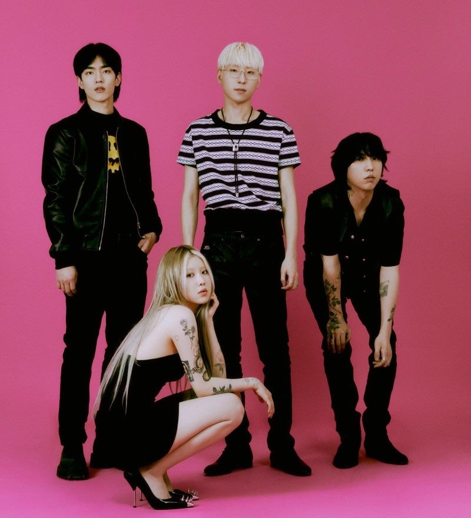
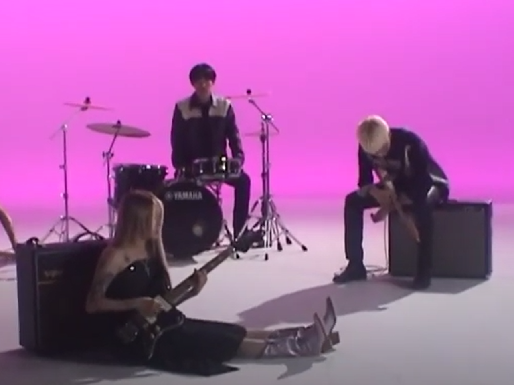

|  | Violet
You all suspects / You all just watched / You all hopeless murderers / You all goddamn control freaks / All you have done is say no to my face / But everything I've done is nothing to you people, wrong people I'm not doing anything wrong / You hate to agree with my right mind and thoughts Cause I'm a ruthless rock star baby / Just a matter of time before I make you nod to my songs // I know if I'm wrong / You should know // I was the best you’ve got / best you’ve got // You think I'm weak / You say it to everyone / You're living in your own world and / You’re no more than a dickhead to me / Mine is getting bigger and better / What have you done for me / The more you do, the more I feel like a grown woman / Indeed, I'm madly intelligent // I'm not doing anything wrong / You hate to agree with my right mind and thoughts / Cause I'm a ruthless rock star baby / Just a matter of time before I make you nod to my songs // I know if I'm wrong / You should know //I was the best you’ve got / best you’ve got |
|---|
PINKTOP The guy in a pink top / Walkin' like he got everything ready already / The guy in a pink top Chased me down the block and followed my eyes / And he said to me / The guy in a pink top / Said he likes my music, likes my perfume The guy in a pink top / Said he'll let me do whatever I want / And he said to me It don't matter who you are / It don't matter what you like / It don't matter how you behave It don't matter how I dress / As long as I walk my path / "Honey, it don't matter" // The guy in a pink top / Said he likes my fashion, likes my perfume / The guy in a pink top |
|---|
|  | Let me go!
Too hot, this summer in the city / Love the sun but the moon comes so fast / It's just a sequence in nature, some said I'm against it, but I'm facing it / I'm in the mood, the whole different level / I got no label / Fuck them boys, cute voices Love them all / It's so crazy / Love them all / It's so crazy / Let it go - Let it go -- Let it go - Let me go -- Too harsh to survive in the city / Love the moon but the sun rises too soon / It's just a sequence in nature, some said You're against it, but you're facing it / We're in the mood, the whole different level / We got no label Fuck them boys, cute voices / Love them all / It's so crazy / I love you all / It's so crazy / Let it go - Let it go -- Let it go - Let me go -- |
|---|